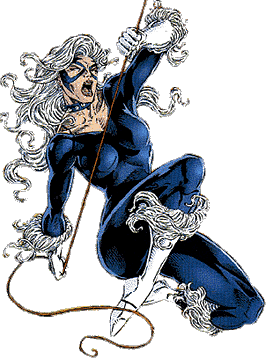
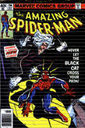
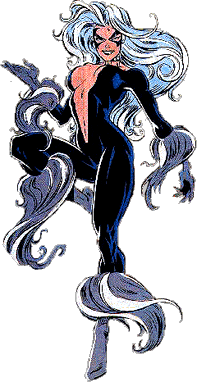
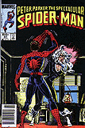
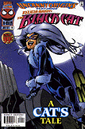
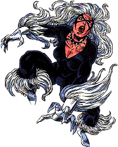

|
 |
Name:
Felicia Hardy
Relatives:
Walter
(Father - Deceased), Lydia (Mother - Deceased).
Affiliates:
Spider-Man.
Major
Enemies:
Kingpin,
Doctor Octopus, Sabretooth, Cardiac, Faze, First Strikers, Scar,
Hydro-Man.
Powers:
The
Black Cat is in peak condition for a woman her age in many ways:
strength, endurance & agility...She also has a great understanding
of the martial arts & uses them well...She became an excellent
burglar having great criminal skills. She "Rigged" her own
"Bad Luck" atmosphere onto others she came across by a number
of ways...She also carries a cable with her she uses to swing or walk on
as a tightrope.
Origin:
Felicia
Hardy was a former Cat Burglar...Her Father was a very well known Cat
Burglar...She later learned that all along, the "bad Luck"
factor was in her genes to begin with. |
|
1st
App.:
Amazing
Spider-Man #194:

July
1979
Origin
Issue:
Amazing
Spider-Man
#195...Uncanny
Origins
#10
Spider-Man
Appearances:
Amazing
Spider-Man #194,
195, 204, 226, 227, 246, 247, 256-258, 263,266, 288, 316, 331, 342, 343,
370-373, 379...Spectacular
Spider-Man #76-80, 83, 85-100, 112, 113, 115-117, 119, 123, 128,
201, 202, 205, 206, 209, 210, Annual 12 & 14...Marvel
Team-Up
Annual #7...Web
Of
Spider-Man
#80, 102, 103, 113, 125, 128, Annual 8, 10, Super Special 1...Spider-Man
#35 & 36, V2 #5...Sensational Spider-Man
#29 & 30...Unlimited
#2 & 11...What-If? V2 #21 & 99...Uncanny
Origins
#10 |
 |
|
The
Black
Cat soon became very close to Spider-Man and even professed her love to
him...They crossed paths many times early on...Spider-Man soon reveled his
true identity to Felicia and they were an item...They fought side by side
against such foes as The Kingpin & Doctor Octopus. |
 |
|
 |
Her
"Bad Luck" powers were soon realized to be true genetic
mutated powers rather than just luck...They soon ended their love affair
and hasn't seen each other & fought side by side much since
then...She got her own Limited Series,
began
dating Flash Thompson (Peter's close friend), and met Spidey every now
and then since most recent in Spider-Man V2 #5 against the
"New" evil Spider-Woman & Spider-Man Annual 2000 against
Hydro-Man. |
|
 |
Spider-Man
Friend Rating: 9 (out
of 10)
|